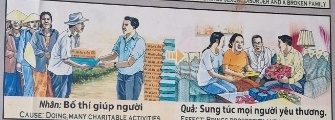

La Siembra Silenciosa The Silent Sowing La semina silenziosa 无声的播种 البذر الصامت Тихий посев Die stille Aussaat Les semailles silencieuses 静かなる種まき A semeadura silenciosa Gieo hạt thầm lặng
La generosidad y el fruto de la abundancia. Generosity and the fruit of abundance. La generosità e il frutto dell'abbondanza. 慷慨和丰富的果实。 الكرم وثمرة الوفرة. Щедрость и плод изобилия. Großzügigkeit und die Frucht des Überflusses. Générosité et fruit de l'abondance. 寛大さと豊かさの果実。 Generosidade e fruto da abundância. Sự rộng lượng và thành quả của sự dồi dào.
Elena repartía su ración de comida entre los necesitados de su aldea, impulsada por una compasión pura. Sembró en su rastro espiritual una Causa de abundancia y conexión profunda con el corazón humano que el tiempo solo supo amplificar.
Elena distributed her food ration among the needy of her village, driven by pure compassion. She sowed in her spiritual trail a Cause of abundance and deep connection with the human heart that time only knew how to amplify.
Elena ha distribuito la sua razione di cibo tra i bisognosi del suo villaggio, spinta da pura compassione. Ha seminato nella sua traccia spirituale una Causa di abbondanza e di profonda connessione con il cuore umano che solo il tempo ha saputo amplificare.
出于纯粹的同情心，埃琳娜将她的口粮分发给村里有需要的人。他在自己的精神轨迹中播下了丰富的事业，并与人类的心灵建立了深厚的联系，而时间只知道如何放大这种联系。
قامت إيلينا بتوزيع حصتها الغذائية على المحتاجين في قريتها، بدافع من الرحمة الخالصة. لقد زرع في أثره الروحي سببًا للوفرة والارتباط العميق بقلب الإنسان الذي لم يعرف الزمن إلا كيفية تضخيمه.
Елена раздала свой продовольственный паек нуждающимся в своей деревне, движимая чистым состраданием. Он посеял в своем духовном следе Причина изобилия и глубокой связи с человеческим сердцем, которую время только умело усилить.
Elena verteilte ihre Lebensmittelration aus purem Mitgefühl an die Bedürftigen in ihrem Dorf. Er säte in seiner spirituellen Spur eine Ursache des Überflusses und der tiefen Verbindung mit dem menschlichen Herzen, die die Zeit nur noch verstärken konnte.
Elena a distribué sa ration alimentaire aux nécessiteux de son village, motivée par une pure compassion. Il a semé dans sa trace spirituelle une Cause d’abondance et de connexion profonde avec le cœur humain que le temps n’a su qu’amplifier.
エレナは純粋な思いやりに動かされて、村の貧しい人々に食料を配りました。彼は自分の精神的な痕跡に豊かさと人間の心との深いつながりの大義を蒔きましたが、それは時が増幅する方法しか知りませんでした。
Elena distribuiu sua ração alimentar entre os necessitados de sua aldeia, movida por pura compaixão. Semeou em seu traço espiritual uma Causa de abundância e de profunda conexão com o coração humano que o tempo só soube amplificar.
Elena phân phát khẩu phần ăn của mình cho những người nghèo trong làng, được thúc đẩy bởi lòng từ bi thuần khiết. Ngài đã gieo vào trong dấu ấn tâm linh của mình một Nguyên nhân dồi dào và mối liên hệ sâu xa với lòng người mà thời gian chỉ biết khuếch đại.
"Dar es la única forma de poseer."
"Giving is the only way to possess."
"Dare è l'unico modo per possedere."
“给予是获得的唯一途径。”
"العطاء هو الطريقة الوحيدة للتملك."
«Отдавать – единственный способ обладать».
„Geben ist der einzige Weg zu besitzen.“
"Donner est la seule façon de posséder."
「与えることが所有する唯一の方法だ。」
"Dar é a única maneira de possuir."
"Cho đi là cách duy nhất để sở hữu."
El Pan de la Vida
The Bread of Life
Il Pane della Vita
生命的粮
خبز الحياة
Хлеб жизни
Das Brot des Lebens
Le pain de vie
命のパン
O Pão da Vida
Bánh Sự Sống
Cuentan de una pobre campesina que apenas tenía un mendrugo de pan para cenar. Al escuchar un golpe en su puerta, encontró a un viajero agotado y hambriento. Sin pensarlo un segundo, partió su único pan y se lo entregó con una sonrisa cálida...
Lo que ella no podía ver es que, en el reino de lo invisible, dar no es quitar. Cada miga entregada con amor verdadero es una semilla plantada en la tierra fértil de la eternidad.
Y el cosmos le devolvió la cosecha. Tiempo después, la vemos caminando como una gran señora, dueña de inmensos graneros que alimentan a naciones enteras. No era la suerte ni el azar comercial; era el pan de aquella fría noche, que al entregarlo con el corazón, se multiplicó hasta el infinito, enseñándonos que solo poseemos para siempre... aquello que damos a los demás.
They tell of a poor peasant woman who barely had a crust of bread for dinner. Hearing a knock on his door, he found an exhausted and hungry traveler. Without a second thought, he broke his only bread and handed it to her with a warm smile...
What she couldn't see is that, in the realm of the invisible, giving is not taking. Every crumb given with true love is a seed planted in the fertile soil of eternity.
And the cosmos returned the harvest. Some time later, we see her walking like a great lady, owner of immense granaries that feed entire nations. It was not luck or commercial chance; It was the bread of that cold night, which when given with the heart, multiplied to infinity, teaching us that we only possess forever... that which we give to others.
Raccontano di una povera contadina che per cena aveva a malapena un tozzo di pane. Sentendo bussare alla sua porta, trovò un viaggiatore esausto e affamato. Senza pensarci due volte, spezzò il suo unico pane e glielo porse con un sorriso affettuoso...
Ciò che non riusciva a vedere è che, nel regno dell'invisibile, dare non significa prendere. Ogni briciola donata con vero amore è un seme piantato nel terreno fertile dell'eternità.
E il cosmo ha restituito il raccolto. Qualche tempo dopo, la vediamo camminare come una grande signora, proprietaria di immensi granai che sfamano intere nazioni. Non è stata fortuna o opportunità commerciale; Era il pane di quella fredda notte, che donato con il cuore si moltiplicava all'infinito, insegnandoci che possediamo per sempre solo... ciò che doniamo agli altri.
他们讲述了一位贫穷的农妇的晚餐几乎没有面包皮。听到敲门声，他发现了一个疲惫又饥饿的旅行者。他想都没想，掰开自己唯一的面包，笑眯眯地递给她……
她看不到的是，在无形的领域里，给予并不等于索取。每一颗用真爱给予的面包屑都是一颗种子，种在永恒的沃土上。
宇宙也回报了收获。一段时间后，我们看到她走路就像一位伟大的女士，她拥有为整个国家提供粮食的巨大粮仓。这不是运气，也不是商业机会；而是。这是那个寒冷夜晚的面包，当用心给予时，它会倍增到无限，告诉我们我们只能永远拥有……我们给予他人的东西。
يتحدثون عن امرأة فلاحة فقيرة بالكاد تناولت كسرة خبز على العشاء. سمع طرقًا على بابه، فوجد مسافرًا منهكًا وجائعًا. وبدون تفكير ثانٍ، كسر خبزه الوحيد وأعطاه لها بابتسامة دافئة...
ما لم تستطع رؤيته هو أنه في عالم اللامرئي، العطاء ليس أخذًا. كل فتات يُعطى بالحب الحقيقي هو بذرة مزروعة في تربة الأبدية الخصبة.
وأعاد الكون الحصاد. وبعد مرور بعض الوقت، نراها تمشي كسيدة عظيمة، صاحبة مخازن ضخمة للحبوب تغذي أممًا بأكملها. لم يكن الحظ أو الصدفة التجارية؛ لقد كان خبز تلك الليلة الباردة، الذي عندما يُعطى بالقلب، يتضاعف إلى ما لا نهاية، ويعلمنا أننا لا نملك إلا إلى الأبد... ما نعطيه للآخرين.
Рассказывают о бедной крестьянке, у которой на обед едва хватило корочки хлеба. Услышав стук в свою дверь, он застал измученного и голодного путника. Недолго думая, он преломил свой единственный хлеб и с теплой улыбкой протянул его ей...
Чего она не могла видеть, так это того, что в сфере невидимого давать не значит брать. Каждая крошка, подаренная с истинной любовью, — это семя, посаженное в плодородную почву вечности.
И космос вернул урожай. Некоторое время спустя мы видим, как она идет как великая дама, владелица огромных житниц, кормящих целые народы. Это не была удача или коммерческий шанс; Это был хлеб той холодной ночи, который, когда его давали от сердца, умножался до бесконечности, уча нас, что мы навсегда обладаем только тем, что мы отдаем другим.
Sie erzählen von einer armen Bäuerin, die zum Abendessen kaum eine Brotkruste hatte. Als er ein Klopfen an seiner Tür hörte, traf er auf einen erschöpften und hungrigen Reisenden. Ohne einen zweiten Gedanken brach er sein einziges Brot und reichte es ihr mit einem warmen Lächeln ...
Was sie nicht erkennen konnte, war, dass Geben im Bereich des Unsichtbaren nicht gleich Nehmen ist. Jeder mit wahrer Liebe geschenkte Krümel ist ein Samen, der in den fruchtbaren Boden der Ewigkeit gepflanzt wird.
Und der Kosmos brachte die Ernte zurück. Some time later, we see her walking like a great lady, owner of immense granaries that feed entire nations. Es war weder Glück noch kommerzieller Zufall; Es war das Brot dieser kalten Nacht, das sich, wenn man es mit dem Herzen gab, bis ins Unendliche vermehrte und uns lehrte, dass wir nur das besitzen, was wir anderen für immer geben.
Ils parlent d'une pauvre paysanne qui avait à peine une croûte de pain pour le dîner. En entendant frapper à sa porte, il trouva un voyageur épuisé et affamé. Sans réfléchir, il rompit son seul pain et le lui tendit avec un sourire chaleureux...
Ce qu'elle ne pouvait pas voir, c'est que, dans le domaine de l'invisible, donner n'est pas prendre. Chaque miette donnée avec le véritable amour est une graine plantée dans le sol fertile de l’éternité.
Et le cosmos a rendu la récolte. Quelque temps plus tard, on la voit marcher comme une grande dame, propriétaire d'immenses greniers qui nourrissent des nations entières. Ce n’était pas de la chance ou une chance commerciale ; C'était le pain de cette nuit froide, qui, donné avec le cœur, se multipliait à l'infini, nous apprenant que l'on ne possède pour toujours... que ce que l'on donne aux autres.
彼らは、夕食にパンの耳をほとんど持っていなかった貧しい農民の女性のことを語っています。ドアをノックする音が聞こえ、彼は疲れ果ててお腹を空かせた旅行者を見つけました。彼は何も考えずに唯一のパンを裂き、温かい笑顔で彼女に手渡した…。
彼女には見えなかったのは、目に見えない領域では、与えることは奪うことではないということです。真の愛をもって与えられるあらゆるパンくずは、永遠の肥沃な土壌に植えられた種です。
そしてコスモスは収穫を返しました。しばらくして、私たちは彼女が偉大な女性、全国民を養う巨大な穀倉の所有者のように歩いているのを目にします。それは幸運や商業的なチャンスではありませんでした。それはあの寒い夜のパンで、心を込めて与えると無限に増え、私たちが永遠に所有できるのは他人に与えるものだけだということを教えてくれました。
Contam a história de uma pobre camponesa que mal comia um pedaço de pão no jantar. Ao ouvir uma batida em sua porta, ele encontrou um viajante exausto e faminto. Sem pensar duas vezes, ele partiu seu único pão e entregou a ela com um sorriso caloroso...
Họ kể về một người phụ nữ nông dân nghèo khó có được một mẩu bánh mì cho bữa tối. Nghe thấy tiếng gõ cửa, anh thấy một du khách đang kiệt sức và đói khát. Không cần suy nghĩ gì thêm, anh bẻ chiếc bánh mì duy nhất của mình và đưa cho cô với nụ cười ấm áp...
O que ela não conseguia ver é que, no reino do invisível, dar não é receber. Cada migalha dada com amor verdadeiro é uma semente plantada no solo fértil da eternidade.
Điều cô không thể nhìn thấy là, trong thế giới vô hình, cho đi không phải là nhận lại. Mỗi mảnh vụn được trao đi bằng tình yêu đích thực đều là một hạt giống được gieo vào mảnh đất màu mỡ của cõi vĩnh hằng.
E o cosmos devolveu a colheita. Algum tempo depois, vemos-na caminhar como uma grande senhora, dona de imensos espigueiros que alimentam nações inteiras. Não foi sorte ou acaso comercial; Foi o pão daquela noite fria, que quando dado com o coração, multiplicou-se ao infinito, ensinando-nos que só possuímos para sempre... aquilo que damos aos outros.
Và vũ trụ đã trả lại mùa màng. Một thời gian sau, chúng ta thấy cô ấy bước đi như một tiểu thư, chủ nhân của những vựa lúa khổng lồ nuôi sống cả quốc gia. Đó không phải là may mắn hay cơ hội thương mại; Đó là miếng bánh của đêm lạnh giá đó, khi được trao đi bằng trái tim, sẽ nhân lên vô tận, dạy chúng ta rằng chúng ta chỉ sở hữu mãi mãi... thứ mà chúng ta trao cho người khác.
La Inspiración Original
The Original Inspiration
L'Ispirazione Originale
最初的灵感
الإلهام الأصلي
Оригинальное вдохновение
Die Ursprüngliche Inspiration
L'Inspiration Originale
元のインスピレーション
A Inspiração Original
Nguồn cảm hứng ban đầu
La historia que hemos relatado en este capítulo está inspirada por el pasaje de la escena original de los murales «Tranh Nhân Quả» (Ilustraciones del Karma) del Templo Linh Ung en Da Nang, capturado en la imagen.
La storia che abbiamo raccontato in questo capitolo è ispirata al passaggio della scena originale dei murali “Tranh Nhân Quả” (Illustrazioni del Karma) del Tempio Linh Ung a Da Nang, catturati nell'immagine.
我们在本章中讲述的故事的灵感来自图像中捕获的岘港灵应寺“Tranh Nhân Quả”（业力插图）壁画的原始场景。
القصة التي رويناها في هذا الفصل مستوحاة من مقطع من المشهد الأصلي لجداريات "ترانه نهان كو" (الرسوم التوضيحية للكارما) لمعبد لينه أونغ في دا نانغ، الملتقطة في الصورة.
История, которую мы рассказали в этой главе, вдохновлена отрывком из оригинальной сцены фрески «Тран Нхан Ку» («Иллюстрации кармы») храма Линь Унг в Дананге, запечатленной на изображении.
Die Geschichte, die wir in diesem Kapitel erzählt haben, ist inspiriert von der Passage aus der Originalszene der Wandgemälde „Tranh Nhân Quả“ (Illustrationen von Karma) des Linh Ung-Tempels in Da Nang, die im Bild festgehalten ist.
L'histoire que nous avons racontée dans ce chapitre est inspirée du passage de la scène originale des peintures murales « Tranh Nhân Quả » (Illustrations du Karma) du temple Linh Ung à Da Nang, capturées dans l'image.
この章で私たちが語った物語は、ダナンのリンウン寺院の壁画「Tranh Nhân Quả」（カルマの図）の元のシーンの一節からインスピレーションを得て、画像に収められています。
A história que contamos neste capítulo é inspirada na passagem da cena original dos murais “Tranh Nhân Quả” (Ilustrações do Karma) do Templo Linh Ung em Da Nang, capturada na imagem.
Câu chuyện chúng tôi kể trong chương này được lấy cảm hứng từ đoạn trích từ cảnh gốc của bức tranh tường “Tranh Nhân Quả” ở chùa Linh Ứng ở Đà Nẵng, được ghi lại trong hình ảnh.
The story we have related in this chapter is inspired by the passage from the original scene of the "Tranh Nhân Quả" (Karma Illustrations) murals at the Linh Ung Temple in Da Nang, captured in the image.

Como se puede apreciar en el pasaje extraído del mural, la causa y su efecto kármico están descritos originalmente en vietnamita y con una breve traducción al inglés. A continuación, te ofrecemos la traducción y el análisis en tu idioma:
As can be seen in the passage extracted from the mural, the cause and its karmic effect are originally described in Vietnamese with a brief English translation. Below, we offer the translation and analysis in your language:
Come si può vedere nel brano tratto dal murale, la causa e il suo effetto karmico sono originariamente descritti in vietnamita e con una breve traduzione in inglese. Di seguito offriamo la traduzione e l'analisi nella tua lingua:
从壁画的段落中可以看出，因果及其业果最初是用越南语描述的，并有简短的英文翻译。下面我们提供您的语言的翻译和分析：
وكما يتبين من المقطع المأخوذ من اللوحة الجدارية، فإن السبب وتأثيره الكارمي موصوفان في الأصل باللغة الفيتنامية مع ترجمة مختصرة إلى الإنجليزية. نقدم أدناه الترجمة والتحليل بلغتك:
Как видно из отрывка, взятого из фрески, причина и ее кармическое следствие изначально описаны на вьетнамском языке и с кратким переводом на английский язык. Ниже мы предлагаем перевод и анализ на ваш язык:
Wie aus der Passage aus dem Wandgemälde hervorgeht, werden die Ursache und ihre karmische Wirkung ursprünglich auf Vietnamesisch und mit einer kurzen Übersetzung ins Englische beschrieben. Nachfolgend bieten wir die Übersetzung und Analyse in Ihrer Sprache an:
Comme on peut le voir dans le passage tiré de la peinture murale, la cause et son effet karmique sont initialement décrits en vietnamien et avec une brève traduction en anglais. Ci-dessous, nous proposons la traduction et l’analyse dans votre langue :
壁画の一節からわかるように、原因とそのカルマ的影響はもともとベトナム語で説明されており、英語への簡単な翻訳が付けられています。以下にあなたの言語での翻訳と分析を提供します。
Como pode ser visto no trecho retirado do mural, a causa e seu efeito cármico são originalmente descritos em vietnamita e com uma breve tradução para o inglês. Abaixo oferecemos a tradução e análise em seu idioma:
Như có thể thấy trong đoạn trích từ bức tranh tường, nguyên nhân và nghiệp quả của nó ban đầu được mô tả bằng tiếng Việt và có bản dịch ngắn gọn sang tiếng Anh. Dưới đây chúng tôi cung cấp bản dịch và phân tích bằng ngôn ngữ của bạn:
🇻🇳 Tiếng Việt:
Nhân: Bố thí giúp người.
Quả: Sung túc mọi người yêu thương.
🇬🇧 English Translation:
Cause: Doing many charitable activities.
Effect: Brings prosperity and love of others.
Traducción Recreada:
Causa: Hacer obras de caridad ayudando a las personas.
Efecto: Atrae inmensa prosperidad económica y el amor de todos.
Recreated Translation:
Cause: Doing charity work by helping people.
Effect: Attracts immense economic prosperity and the love of everyone.
Traduzione ricreata:
Causa: svolgere attività di beneficenza aiutando le persone.
Effetto: attira un'immensa prosperità economica e l'amore di tutti.
重新翻译：
原因：助人为乐。
效果：吸引巨大的经济繁荣和每个人的爱心。
إعادة إنشاء الترجمة:
السبب: القيام بأعمال خيرية من خلال مساعدة الناس.
التأثير: يجذب الرخاء الاقتصادي الهائل وحب الجميع.
Воссозданный перевод:
Причина: Занимаюсь благотворительностью, помогая людям.
Эффект: Привлекает огромное экономическое процветание и всеобщую любовь.
Nachgebildete Übersetzung:
Ursache: Wohltätigkeitsarbeit leisten, indem man Menschen hilft.
Wirkung: Zieht immensen wirtschaftlichen Wohlstand und die Liebe aller an.
Traduction recréée :
Cause : Faire un travail caritatif en aidant les gens.
Effet : Attire une immense prospérité économique et l'amour de tous.
再作成された翻訳:
原因: 人々を助けることによって慈善活動を行う。
効果: 計り知れない経済的繁栄とすべての人々の愛を引き寄せる。
Tradução recriada:
Causa: Fazer trabalho de caridade ajudando as pessoas.
Efeito: Atrai imensa prosperidade econômica e o amor de todos.
Dịch thuật lại:
Nguyên nhân: Làm từ thiện bằng cách giúp đỡ mọi người.
Tác dụng: Thu hút sự thịnh vượng kinh tế to lớn và sự yêu thương của mọi người.
Análisis: El apego nunca ha multiplicado lo nuestro, sino que lo estanca. El universo es un vasto océano donde el soltar desinteresadamente abre por fuerza los canales receptivos. Quien sabe compartir con su hermano necesitado las migajas hoy, siembra el código de acceso a la abundancia, donde no solo la riqueza material lo sigue de vuelta, sino también el valioso abrazo desinteresado y amor de los que lo rodean.
Analysis: Attachment has never multiplied what is ours, but rather stagnates it. The universe is a vast ocean where selfless letting go forcibly opens receptive channels. Whoever knows how to share the crumbs with his brother in need today, sows the access code to abundance, where not only material wealth follows him back, but also the valuable selfless embrace and love of those around him.
Analisi: L'attaccamento non ha mai moltiplicato ciò che è nostro, ma piuttosto lo stagna. L’universo è un vasto oceano dove il lasciarsi andare disinteressatamente apre con la forza canali ricettivi. Chi oggi sa condividere le briciole con il fratello bisognoso, semina il codice di accesso all'abbondanza, dove non lo segue solo la ricchezza materiale, ma anche il prezioso abbraccio disinteressato e l'amore di chi lo circonda.
分析：依恋从来不会使我们拥有的东西倍增，而是让它停滞不前。宇宙是一片浩瀚的海洋，无私的放下会强行打开接受的通道。谁知道如何与当今有需要的兄弟分享面包屑，谁就播下了通往丰盛的密码，不仅物质财富跟随他回来，而且他周围的人也获得了宝贵的无私拥抱和爱。
التحليل: لم يؤدي التعلق أبدًا إلى مضاعفة ما لدينا، بل أدى إلى ركوده. الكون عبارة عن محيط شاسع حيث يؤدي التخلي غير الأناني إلى فتح قنوات الاستقبال بالقوة. ومن يعرف كيف يتقاسم الفتات مع أخيه المحتاج اليوم، فإنه يزرع رمز الوصول إلى الوفرة، حيث لا تتبعه الثروة المادية فحسب، بل أيضًا الاحتضان القيّم المتفاني والحب لمن حوله.
Анализ: Привязанность никогда не приумножала то, что принадлежит нам, а, скорее, застаивала ее. Вселенная — это огромный океан, в котором самоотверженное отпускание принудительно открывает восприимчивые каналы. Кто умеет разделить крохи со своим сегодня нуждающимся братом, тот сеет код доступа к изобилию, где за ним следует не только материальный достаток, но и ценные самоотверженные объятия и любовь окружающих.
Analyse: Anhaftung hat das, was uns gehört, nie vervielfacht, sondern stagniert. Das Universum ist ein riesiger Ozean, in dem selbstloses Loslassen aufnahmefähige Kanäle öffnet. Wer es heute versteht, die Krümel mit seinem bedürftigen Bruder zu teilen, sät den Zugangscode zum Überfluss, zu dem ihm nicht nur materieller Reichtum folgt, sondern auch die wertvolle selbstlose Umarmung und Liebe der Menschen um ihn herum.
Analyse : L'attachement n'a jamais multiplié ce qui est le nôtre, mais l'a plutôt fait stagner. L’univers est un vaste océan où le lâcher prise désintéressé ouvre de force les canaux réceptifs. Celui qui sait aujourd'hui partager les miettes avec son frère dans le besoin sème le code d'accès à l'abondance, où non seulement la richesse matérielle le suit, mais aussi l'étreinte altruiste et l'amour précieux de ceux qui l'entourent.
分析: 執着は私たちのものを増やすことはなく、むしろそれを停滞させます。宇宙は広大な海であり、無私を手放すことで強制的に受容チャネルが開かれます。今困っている弟にパンくずを分け与える方法を知っている人は、豊かさへのアクセスコードを蒔くことになる。そこには、物質的な富だけでなく、周囲の人々の貴重な無私の抱擁や愛も戻ってくる。
Análise: O apego nunca multiplicou o que é nosso, antes o estagnou. O universo é um vasto oceano onde o desapego altruísta abre à força canais receptivos. Quem hoje sabe repartir as migalhas com o irmão necessitado, semeia o código de acesso à abundância, onde não só a riqueza material o acompanha, mas também o valioso abraço altruísta e o amor daqueles que o rodeiam.
Phân tích: Sự gắn bó chưa bao giờ nhân lên những gì thuộc về chúng ta mà còn làm nó trì trệ. Vũ trụ là một đại dương rộng lớn, nơi sự buông bỏ vị tha sẽ mở ra những kênh tiếp nhận. Ai biết chia sẻ mảnh vụn với người anh em đang cần giúp đỡ ngày nay, gieo mã truy cập vào sự dồi dào, nơi không chỉ của cải vật chất theo mình trở về mà còn cả vòng tay yêu thương vị tha quý giá của những người xung quanh.
Si quieres conocer más sobre el proyecto o colaborar, accede a nuestro Linktree.
If you want to know more about the project or collaborate, access our Linktree.
Se vuoi saperne di più sul progetto o collaborare, accedi al nostro Linktree.
如果您想了解有关该项目或合作的更多信息，请访问我们的 Linktree.
إذا كنت تريد معرفة المزيد عن المشروع أو التعاون، قم بالوصول إلى موقعنا Linktree.
Если вы хотите узнать больше о проекте или сотрудничать, посетите наш Linktree.
Wenn Sie mehr über das Projekt erfahren oder zusammenarbeiten möchten, greifen Sie auf unsere zu Linktree.
Si vous souhaitez en savoir plus sur le projet ou collaborer, accédez à notre Linktree.
プロジェクトについて詳しく知りたい場合、またはコラボレーションしたい場合は、こちらにアクセスしてください。 Linktree.
Se quiser saber mais sobre o projeto ou colaborar, acesse nosso Linktree.
Nếu bạn muốn biết thêm về dự án hoặc hợp tác, hãy truy cập Linktree của chúng tôi.